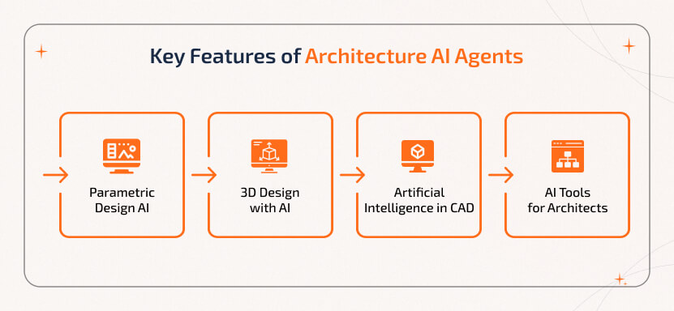
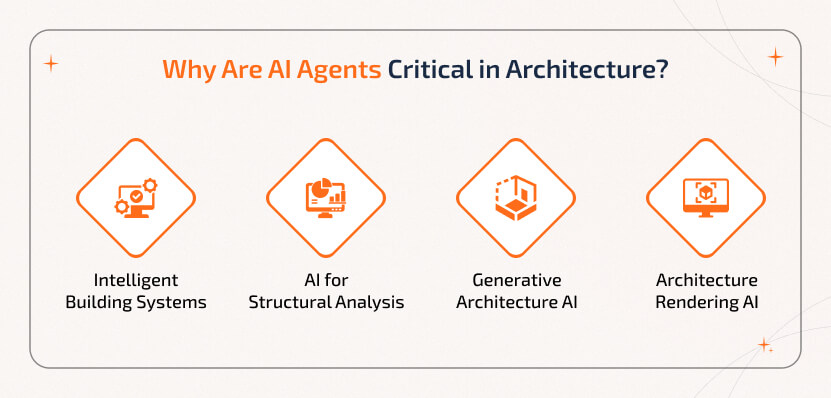
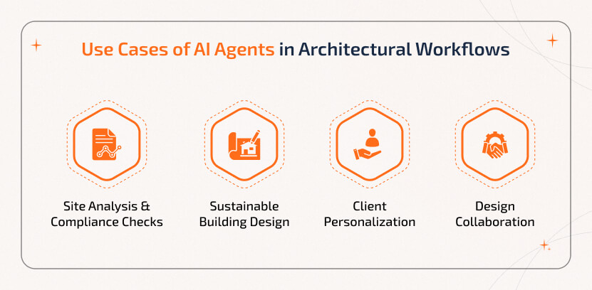
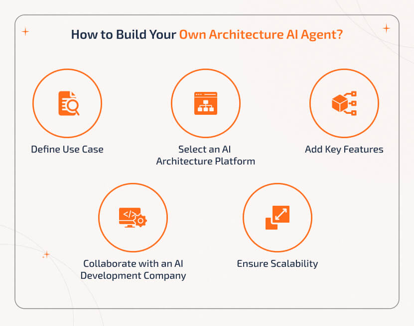

Artificial Intelligence and machine learning are making big impacts and changing the way buildings are imagined, planned, and constructed. Architecture AI agents are one of the most exciting developments designed to help architects primarily. With the help of these smart systems, architects can design faster, work efficiently, and bring in creative ideas that are otherwise not possible with traditional methods.
From generating early design concepts to detailed construction plans, AI in architectural design is enhancing creativity, speed, and sustainability. With the help of machine learning in architecture, these AI agents can analyze large amounts of data, learn design styles, and deliver suggestions tailored to project goals and site constraints.
With the construction industry moving towards automation and data-driven planning, integrating architecture AI agents is not just an upgrade but a strategic approach to gain a competitive advantage. In this blog, you will learn how these agents work, their features, and how to adopt them in the ever-evolving architectural workflow.
What is an Architecture AI Agent All About?
By definition, an Architecture AI Agent is an intelligent digital assistant that uses artificial intelligence, machine learning, and generative design tools to help architects throughout the design process. Besides, they take up the role of optimizing tasks like 3D modelling, parametric design, layout optimization, and performance simulation. This way, an architect will be able to work faster, smarter, and more efficiently.
Key Features of Architecture AI Agents
Modern AI agents are built with a wide range of feature sets, which are as follows:

1. Parametric Design AI – Supports the creation of rule-based, dynamic forms that adapt in real time. They help architects design with flexible inputs and constraints.
2. 3D Design with AI – Automates 3D modeling based on design briefs and contextual data. Thus, it helps streamline the early design process.
3. Artificial Intelligence in CAD – Automates layout adjustments, dimensioning, and constraint satisfaction in tools like AutoCAD and Revit.
4. Architecture AI Tools – These tools handle complex tasks like code checks, zoning analysis, and sustainability reports. This way, AI agents reduce manual effort and improve accuracy.
Explore how AI agents automate modeling, optimize layouts, & speed up architectural design.

How an Architecture AI Agent Works
The architecture in AI refers not just to buildings but also to the structure and design of an AI system itself. In other words, it is like a blueprint or a framework that defines how an AI system works, processes data, and makes data-driven decisions. Further, AI architecture software extends these capabilities by providing automation and data-driven precision.
Here is the breakdown of what architecture in AI is all about:
1. Input Layer – Collects information, probably the user input, sensor data, or building plans.
2. Processing Unit – Uses AI models like machine learning or neural networks to understand and analyze the data.
3. Decision Engine – Chooses the next best action to be performed based on the goals and data.
4. Output Layer – Performs an action or gives a useful response.
This structure allows AI to analyze floor plans, create design ideas, simulate building performance, and assist architects throughout the project lifecycle.
Why Are AI Agents Critical in Architecture?
Just like in any other field, architects face many challenges, and it goes beyond just creativity. Here is how AI agents help them address energy efficiency, compliance, material costs, and user expectations:

1. Intelligent Building Systems
AI agents assess HVAC placement, spatial optimization, and lighting simulations.
2. AI for Structural Analysis
They identify stress points, materials, and loads with real-time insights.
3. Generative Architecture AI
It supports creating hundreds of design iterations rapidly with respect to climate, budget, and site constraints.
4. Architecture Rendering AI
They help speed up visualization with AI-enhanced 3D rendering and automated animation features.
Use Cases of AI Agents in Architectural Workflows
Using AI agents in architectural workflows has been increasing. Correspondingly, the AI agents architecture is uniquely robust in virtual assistance and fraud detection. You shall check out the architectural AI tools that are making a huge difference in real time:

1. Site Analysis & Compliance Checks
AI assesses zoning laws, wind direction, sunlight exposure, etc., and suggests efficient designs.
2. Sustainable Building Design
These agents analyze energy usage patterns and suggest greener alternatives.
3. Client Personalization
AI agents evolve over time and offer custom design recommendations by remembering previous client choices.
4. Design Collaboration AI architecture software integrated with BIM and CAD tools provides real-time collaboration among different teams.
How is an Architecture AI Agent Different from Regular Chatbots/AI?
While businesses are still learning how to build an AI chatbot for customer support, architecture AI agents is the next step. A normal chatbot is rule-based and answers predefined questions. However, an architecture AI agent works autonomously and makes intelligent design suggestions. The table below is a comparative overview of Chatbot Vs Architecture AI Agent.
| Feature | Chatbot | Architecture AI Agent |
|---|---|---|
| Functionality | Static automation, Conversation-based support | Dynamic, Context-aware design-assisting |
| Design Intelligence | Rule-based suggestions | Adaptive and generative layouts tailored to constraints |
| Scope | FAQs, Client onboarding | Full design assistance, Analysis, & Optimization |
| CAD & BIM Integration | Limited | Deep CAD, BIM, & 3D tool integration |
| Workflow Support | Fragmented across tools | Seamless, end-to-end support for entire workflow |
Upgrade to intelligent agents that adapt, design, and deliver faster.
Business Benefits of Using Architecture AI Agents
The many impacts of using architecture AI agents are listed below:
1. With automation and generative tools, the agent speeds up project delivery.
2. Cuts down design costs by reducing manual work and errors.
3. Uses data-driven design validation and thus improves accuracy.
4. Enhances client satisfaction with personalized, high-quality outputs.
Tools That Power Architecture AI Agents
While we could find AI agents for architecture that are custom-built for specific workflows, there are powerful tools that come with AI-driven functionalities. The best part is that they can be integrated into or serve as the foundation for building these agents. These tools help automate complex, repetitive tasks and uncover design possibilities that once took time or were hard to achieve.
Some of the Most Notable AI Architecture Software:
1. Spacemaker by Autodesk – Uses AI to optimize site planning, space efficiency, sunlight exposure, wind flow, etc. It is ideal for sustainable urban design.
2. Hypar – It is an intelligent design software used for automating building systems and generating parametric design options using intelligent logic.
3. TestFit – This AI tool is used for rapid feasibility studies and layout optimization. Ideal for real estate and housing development.
4. ArkDesign – An AI tool for architects used for layout generation, planning, and automating zoning analysis.
5. Veras – It is an AI rendering tool for architecture, used in transforming sketches and 3D models into realistic visuals with the help of AI image generation.
6. Midjourney – This is an AI-powered concept generation tool that creates visual design ideas. It works great for early-stage creativity.
7. Autodesk Revit + AI Plugins – This is traditional BIM software enhanced with AI architecture software plugins. Used for predictive design, clash detection, and performance modelling.
How to Build Your Own Architecture AI Agent?
AI architecture software plays a vital role in streamlining design workflows and improving innovation. Whereas, the best practices for successfully launching an AI agent in architecture begin with a pilot for a single use case, training architects, protecting sensitive client and design data, and monitoring and retraining AI models for accuracy
If you’ve ever thought of developing an AI agent for your architectural firm, then here is the procedure:

1. Define Use Case – Choose whether you want an AI agent to optimize building layouts, 3D modeling, energy analysis, etc.
2. Select an AI Architecture Platform – Opt for a platform that supports machine learning, integrates with 3D engines, and connects to tools like AutoCAD, Revit, or Rhino.
3.Add Key Features – Integrate AI in 3D modeling, generative design plugins, speech input, or real-time simulation.
4. Collaborate with an AI Development Company – For faster and more reliable execution, you can partner with an AI agent development company like Sparkout Tech.
5. Ensure Scalability – Design the system to support future models like VR design walkthroughs, AR construction overlays, real-time collaboration features, etc.
At Sparkout Tech, we build a custom architecture AI agent tailored to your workflows.
Future of Architecture AI Agent Ecosystems
AI keeps evolving, and so do architecture AI agents. We shall expect them not only to design but also to co-create:
AI-Powered BIM Coordination – Agents autonomously resolve design clashes.
AI for Building Performance Prediction – Pre-build simulations for energy and cost analysis.
Cross-Industry Synergy – Integrates with manufacturing AI agents and retail AI agents for modular construction and retail layout optimization.
Voice-Controlled AI Agents – Agents can design a layout based on the architect’s voice commands.
Why Choose Sparkout Tech for AI Agent Development
Sparkout Tech is a leader in AI agent development, and we are known for delivering custom AI architecture software built for scale, security, and innovation.
- We build tailored AI systems that align with your unique design flow.
- Support robust integration with CAD/BIM, rendering engines, and cloud environments.
- We offer end-to-end support, starting from strategy planning to post-launch.
Conclusion
AI agents are transforming the architecture industry. They are not replacing designers but rather enhancing their skills. The architecture of AI agents mirrors human-like decision-making by combining several aspects into one adaptive loop, allowing them to learn continuously and evolve according to the current trends. Whether you are looking to streamline the design cycle for your clients, reduce costs, or enhance your creative side, investing in an AI agent architecture moves you toward a more efficient future.